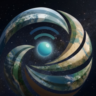
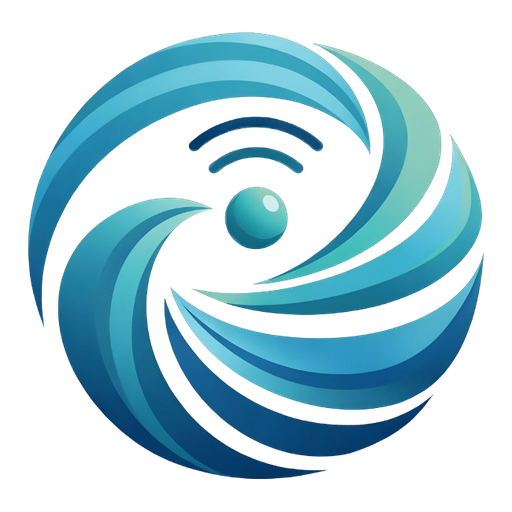

Walk Mars
before anyone
does.
Marswalk plans safe expeditions on real NASA terrain, and keeps astronauts found and in touch where there is no GPS.

There is no GPS on Mars, and Earth is minutes away.
Crater walls, loose slopes, cold and radiation. A suited astronaut cannot just walk in a straight line.
With no GPS, a few kilometres from home the crew's position slowly drifts away from the truth.
The habitat cannot see behind a ridge, and relay satellites are overhead only a few times a day.
A message from Mars to Earth takes 4 to 24 minutes one way. Mission control cannot steer a walk live.
Plan it, check it, then walk it before anyone goes.
Click the globe. A 178 km site is built from NASA terrain in about a minute.
Slope, radiation, satellite cover, habitat radio, sunlight, temperature and more.
Around steep walls and blind spots, with a forecast of how well the crew can be tracked.
Walk or drive the route on the real ground, on a laptop or a phone in a headset.
Not the shortest path. The cheapest one.
The map is cut into 20 m squares. Every square gets a score, and the planner finds the path with the lowest total.
a square
=
How long it takes to cross, from the hiking rule at a suited pace.
Flat and safe.
Free under 3°, double at 8°, 24 times at 16°.
Radiation, relay blind spots, shadow, cold ground.
Slope weight 1. Never steeper than 18°. Long, gentle ways round.
Slope weight 0.4. Up to 22° when it saves real time.
Slope weight 0.08. Up to 25°, nearly the straight line.
The habitat and the satellites take turns finding you.
While its mast can see the crew, it measures range and bearing, like an airport beacon. Voice is instant.
±5 m · ±1° (assumed)MRO, Mars Odyssey, TGO and Mars Express, on their real orbits from NASA JPL Horizons. Overhead, they fix the position and carry messages.
±5 m after a fixMessages cross the real light delay, and replies wait at the orbiter for the next pass.
10.9 light-minutes today (JPL Horizons)Rehearse the walk, then hand over the plan.
Walk where you look. One screen shows where you are, the other is the radio. Hold the dot on a button to press it.
A robotic rover in the style of Spirit and Opportunity: six wheels, corner steering, about 10 km/h on its planned route (assumed).
Every plan exports a two-page PDF: map, profile, satellite passes, navigation forecast and a go / no-go check.
Nothing on the ground is invented.
Started by hand in QGIS, then rebuilt as Python pipelines. Where a number is a model or an assumption, the app says so.
Built with help from AI assistants (Claude and Gemini). Voice-over uses text-to-speech.

AirAwareNetwork
A Palestinian, community-led air quality network built on IoT. At home we keep sensors connected across a region; for Space Apps we took that question to Mars.
Built by Saeed Hersheh, team lead: the idea, the NASA data pipelines, the route planner, the satellite navigation, and the 3D and VR experience.
Try it livemarswalk-266019376344.europe-west1.run.app